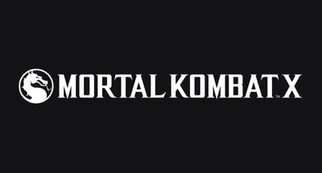

Com gráficos excelentes e adições certeiras à jogabilidade, a franquia para PS4, Xbox One e PC chega ao seu ápice. Confira:
Mortal Kombat X review
Mortal Kombat é uma excelente série de jogos de luta que há mais de 20 anos explora a violência exageradamente cômica. Mas, ao mesmo tempo, seus combates conseguem ser simples para jogadores casuais, e avançados para os mais experientes no gênero. Nessas mais de duas décadas, os pilares que mantêm a franquia de pé, com seus personagens, mundos alternativos e muita "karnificina", evoluíram bastante, até chegar ao ponto de passar o bastão para uma nova geração.Mortal Kombat X é prova deste amadurecimento da franquia idealizada por Ed Boon e John Tobias. Ela estreia na nova geração de videogames trazendo lutas muito gostosas de jogar e de assistir, seja você um jogador de games de luta, seja você um amante dos blockbusters, ou chamados "games pipoca". A nova versão está entre os melhores jogos de toda a série, tanto por conta de seu visual quanto de seus controles com resposta rápida e a violência exagerada característica.
Onde tudo Komeça
Um helicóptero sobrevoa escombros e confrontos entre humanos e demônios quando, de repente, Scorpion aparece e abate o seu piloto. É com essa cena que Mortal Kombat X começa mais ou menos de onde o anterior parou. Em sua história, vimos o imperador Shao Kahn derrotado e consumido pelos deuses antigos. Porém, o deus caído Shinnok revelou suas verdadeiras intenções em dominar a Exoterra e o plano terreno, além de qualquer mundo que ver pela frente
É claro que as chamadas “forças do bem” não deixariam isso ocorrer de forma barata, e assim Johnny Cage, Sonya Blade, Kenshi, Raiden, Fujin e outros heróis correm em socorro do nosso mundo, honrando ainda heróis que haviam caído em combate, como Jax e Liu Kang. O grupo se reúne para combater Shinnok durante um período de cinco anos iniciais e, logo, conseguem o objetivo.Depois de aprisionar Shinnok em seu amuleto e salvar os mundos, mais uma vez, os heróis vão viver suas vidas como podem e a história dá um salto – 20 anos adiante. Johnny agora está bem mais velho, assim como Sonya e outros personagens. Tudo isso para dar lugar a uma nova geração de heróis, formada por herdeiros daqueles combatentes do passado, incluindo Cassie Cage, filha dos dois militares.
Durante todo esse tempo, Cassie e um novo grupo de heróis cresceram para se tornar novos membros das Forças Especiais, que lutam ao lado de alguns heróis da Exoterra para continuar mantendo a paz em todos os mundos. Ainda assim, nada vai ser fácil quanto parece, já que uma guerra civil se deflagra por lá, entre a “verdadeira herdeira” Mileena e o atual imperador, Kotal Kahn. Estes são apenas alguns dos primeiros momentos de Mortal Kombat X. Novamente o jogo dá um banho em termos de história e narrativa, e conta tudo isso de forma cinematográfica, frente aos fatos que precisamos acompanhar para entender tudo: quem são os novos personagens? Onde está Quan Chi? Como Scorpion ainda vive? Por quanto tempo mais os guerreiros precisarão participar de combates mortais?
O nível de detalhes visuais impressiona
Mortal Kombat X é construído em cima de uma Unreal Engine 3 bastante modificada. Em termos de visual, ele não deixa nada a desejar em relação a outros games dessa geração. O número de polígonos com os quais os personagens são construídos impressiona bastante: os detalhes nas roupas dos lutadores não são apenas adereços espremidos em forma de texturas: tudo é independente e se mexe de forma independente no meio da luta.Em Mortal Kombat 9 os lutadores ficavam com o corpo coberto de sangue e cortes na pele enquanto apanhavam. Aqui, tudo acontece de forma similar mas muito mais realista. O sangue que antes era exagerado e parecia uma mancha de tinta sobre o personagem agora gruda as roupas e escorre pelos braços e pernas. Junto com o sangue, gotas de suor ao final das lutas mostram como a batalha foi intensa.
As marcas de cortes também são mais sutis. No lugar de faltar uma parte do crânio do lutador como antes, agora temos arranhões e marcas que condizem mais com o tipo de ferimento causado na luta, como os sais de Mileena, por exemplo..
Em termos de movimentação também podemos ver que a captura de movimentos foi precisa. Mortal Kombat X foi construído desde o início para ser um game mais competitivo e isso pode ser visto na estrutura de movimentação dos golpes. As animações estão bem mais precisas que antes e é possível calcular o tempo dos golpes com bastante precisão na hora das lutas.
A Exoterra ganhou vida
Os cenários também estão incrivelmente caprichados: o jogo não parece ser o mesmo que testamos na BGS 2014 ano passado; tudo agora parece estar mais caprichado que antes. O mundo de Mortal Kombat X ganhou vida.Aqui, podemos um lado diferenciado da Exoterra, mundo que até então era quase sempre sombrio e retratado a noite agora mostra muito mais personalidade. Um grande exemplo disso é o cenário Pátio do Imperador em que trabalhadores erguem uma gigantesca estátua do imperador Kotal Kahn
O personagem da raça Osh Tekk foi baseado na cultura Asteca, e essa influência também pode ser vista nesse cenário em questão. Se você parar para prestar atenção nos detalhes verá os trabalhadores conversando, capatazes dando ordens aos escravos e animais servindo como guindastes.
O lado vivo da Exoterra ainda pode ser visto na selva que também conta com decorações e influências da cultura Asteca ou no mercado, que mostra pela primeira vez como é a miscelânea de raças que vive nesse mundo paralelo.
Este é, sem dúvidas, o Mortal Kombat mais bonito de todos, sem entrar no mérito da tecnologia da época em que os games foram lançados. O tratamento visual aos detalhes é algo bem interessante e que não seria totalmente necessário para a dinâmica de um game de luta. Porém, sem dúvida, foram detalhes muito bem vindos.
Kombate recheado

Mortal Kombat X vem com muitos modos de jogo, alguns deles apostando forte na conexão com a Internet, como o modo de guerra de facções. Aqui o jogador escolhe sua facção no início do game e vai lutando enquanto pode. Conforme suas vitórias aumentam, sua facção também sobe de nível e o mesmo acontece com usuários ao redor do globo, que estejam jogando conectados com a Internet.
O mais interessante é que isso independe de plataformas. Assim, quem está jogando no Xbox One ou PC e escolher a facção Lin Kuei poderá ajudar esse time a subir de nível juntamente com você, que está jogando no PS4, por exemplo. Foi uma forma inteligente e clara de unir as plataformas, ainda que seja de forma bem indireta.
Os modos extras são muitos e variam bastante. Além do óbvio multiplayer online com seus submodos, como o “Rei da Montanha”, temos o retorno da Torre de Desafios, que agora possui três variantes, entre elas a Torre Viva, que vai sempre mudando, de acordo com o tempo. A Torre em si continua a mesma, com desafios específicos e lutas pré-programadas que devem ser vencidas pelo jogador.
Por fim, há ainda a Krypta, contendo diversos extras que podem ser destravados por meio de uma moeda fictícia obtida pelo jogador ao longo das lutas. Desta forma é possível destravar Fatalities, artes dos personagens, roupas adicionais e outros benefícios, da mesma forma que existia em MK9, mas com um exploração mais “solta”, lembrando um jogo de tiro em primeira pessoa.
É claro que, com tantos modos, Mortal Kombat X deve durar bastante nas mãos do jogador mais exigente. O modo de história não dura tanto quanto parece, apesar de ser demorado para os padrões de um jogo de luta, mas vai ser difícil ficar jogar por algum tempo, principalmente pelo modo online.
Mil formas de exekução
Desde os primeiros rumores sobre a volta dos Brutalities, muita gente se animou. Afinal de contas, esse tipo de finalização já estava de fora dos jogos há um bom tempo. Quando eles finalmente foram revelados, muita gente reclamou: os golpes estavam diferentes do original, que surgiu em MK Trilogy e UMK3 para SNES e Mega.
Em Mortal Kombat X os Brutalities são um pouco diferentes, principalmente porque agora é possível executar os movimentos antes mesmo de o inimigo morrer. Para que isso funcione é preciso cumprir alguns requisitos durante a luta..
O resultado é que agora está muito melhor que antes, e por um simples fato: como é possível realizar esses golpes antes de a luta terminar, acaba ficando muito melhor para pegar o adversário de surpresa. Imagine que o seu inimigo está lá, tentando fugir, com um pedacinho da barra sobrando. Quando ele acha que vai conseguir se safar, você emenda um Brutality e acaba com a luta na mesma hora. O efeito de humilhação no oponente é muito maior que com um simples Fatality. Afinal de contas, o oponente ainda tem chance de revidar quando você acaba com ele. É o equivalente a matar o inimigo com a faquinha no CS..
Cada um dos lutadores possui pelo menos cinco Brutalities diferentes, deixando as variações bem abrangentes e chegando perto de 130 movimentos distintos. Existem explosões, decapitações, desmembramentos, queimaduras de terceiro grau e praticamente qualquer forma imaginável de matar uma pessoa.
Uma das principais marcas de Mortal Kombat sempre foram os Fatalities, e é claro que eles não poderiam ficar de fora do novo jogo. E a nova geração fez muito bem para os golpes que agora estão mais reais do que nunca. Ainda podemos contar com o bom humor característico, como o impagável “Selfie Fatality” de Cassie Cage, ou a “remoção de tripas” de Ermac e Takeda, que são brutais ao extremo.
Outra novidade incluída nesse jogo é o Faction Kill. Esse tipo de execução não é realizada pelo lutador, e sim pela facção à qual ele faz parte. Ao todo, cada grupo possui 5 finalizações diferentes, e elas são as mesmas para todos os lutadores.
CONCLUSÃO
Mortal Kombat X consegue manter a essência da franquia na nova geração de consoles, trazendo batalhas tecnicamente precisas, com muitos golpes especiais e combos, mas ao mesmo tempo amigáveis para poder jogar com amigos e a família. O visual está excelente, com lutas comicamente violentas rodando a 60 quadros por segundo. Há muito conteúdo para se aproveitar após o game concluído, além do modo online e dos desafios das Torres. E com o dinheiro do game, dá para abrir mais fatalities, brutalities, roupas e artes. Quem já gostava vai jogar por muito tempo. Por essas e outras, é o melhor game da franquia.
|  |  |